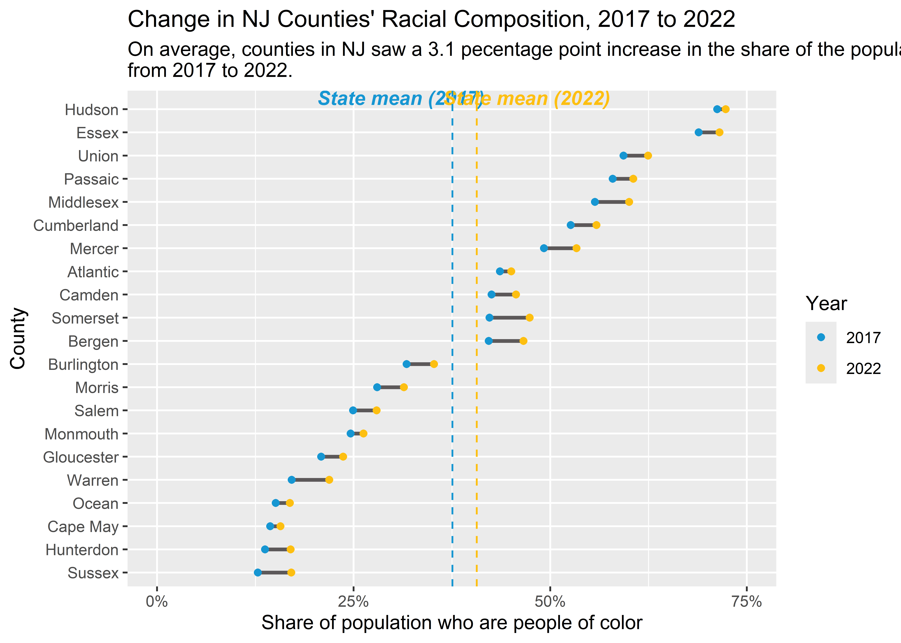

Overview
urbnindicators aims to provide users with analysis-ready data from the American Community Survey (ACS).
With a single function call, you get:
Hundreds of standardized variables, such as percentages, in addition to the raw count variables used to produce them.
Meaningful, consistent variable names.
A codebook that describes how each variable is calculated.
The built-in capacity to pull data for multiple years and multiple states.
Supplemental measures, such as population density, that aren’t available from the ACS.
Built-in quality checks to help ensure that calculated variables are accurate.
Margins of error and coefficients of variation for (virtually) all variables.
Installation
Install the development version of urbnindicators from GitHub with:
Note that this package is under active development with frequent updates–check to ensure you have the most recent version installed!
Use
Obtain data
plot_data = compile_acs_data(
years = c(2017, 2022),
geography = "county",
states = "NJ",
counties = NULL,
spatial = FALSE) %>%
transmute(
county_name = NAME %>% str_remove(" County, New Jersey"),
race_personofcolor_percent,
data_source_year)
#> | | | 0% | | | 1% | |= | 2% | |== | 3% | |=== | 4% | |=== | 5% | |==== | 5% | |==== | 6% | |===== | 7% | |===== | 8% | |====== | 8% | |====== | 9% | |======= | 10% | |======== | 11% | |======== | 12% | |========= | 12% | |========= | 13% | |========== | 14% | |========== | 15% | |=========== | 15% | |=========== | 16% | |============ | 17% | |============ | 18% | |============= | 18% | |============= | 19% | |============== | 19% | |============== | 20% | |============== | 21% | |=============== | 21% | |=============== | 22% | |================ | 22% | |================ | 23% | |================= | 24% | |================= | 25% | |================== | 25% | |================== | 26% | |=================== | 27% | |=================== | 28% | |==================== | 28% | |==================== | 29% | |===================== | 29% | |===================== | 30% | |====================== | 31% | |====================== | 32% | |======================= | 32% | |======================= | 33% | |======================== | 34% | |======================== | 35% | |========================= | 35% | |========================= | 36% | |========================== | 37% | |========================== | 38% | |=========================== | 38% | |=========================== | 39% | |============================ | 41% | |============================= | 41% | |============================= | 42% | |============================== | 43% | |============================== | 44% | |=============================== | 44% | |=============================== | 45% | |================================ | 45% | |================================ | 46% | |================================= | 47% | |================================= | 48% | |================================== | 48% | |================================== | 49% | |=================================== | 50% | |=================================== | 51% | |==================================== | 51% | |==================================== | 52% | |===================================== | 53% | |===================================== | 54% | |====================================== | 54% | |====================================== | 55% | |======================================= | 56% | |======================================== | 57% | |======================================== | 58% | |========================================= | 59% | |========================================== | 59% | |========================================== | 60% | |========================================== | 61% | |=========================================== | 61% | |=========================================== | 62% | |============================================= | 65% | |============================================== | 66% | |=============================================== | 66% | |=============================================== | 67% | |=============================================== | 68% | |================================================ | 68% | |================================================ | 69% | |================================================= | 70% | |================================================== | 71% | |=================================================== | 72% | |=================================================== | 73% | |==================================================== | 74% | |==================================================== | 75% | |===================================================== | 75% | |===================================================== | 76% | |====================================================== | 77% | |======================================================= | 78% | |======================================================= | 79% | |======================================================== | 79% | |======================================================== | 80% | |======================================================== | 81% | |========================================================= | 81% | |========================================================= | 82% | |========================================================== | 82% | |========================================================== | 83% | |=========================================================== | 84% | |=========================================================== | 85% | |============================================================ | 85% | |============================================================ | 86% | |============================================================= | 86% | |============================================================= | 87% | |============================================================= | 88% | |============================================================== | 88% | |============================================================== | 89% | |=============================================================== | 89% | |=============================================================== | 90% | |=============================================================== | 91% | |================================================================ | 91% | |================================================================ | 92% | |================================================================= | 93% | |================================================================= | 94% | |================================================================== | 95% | |=================================================================== | 96% | |==================================================================== | 97% | |==================================================================== | 98% | |===================================================================== | 99% | |======================================================================| 100%
#> Downloading: 48 kB Downloading: 48 kB Downloading: 65 kB Downloading: 65 kB Downloading: 160 kB Downloading: 160 kB Downloading: 240 kB Downloading: 240 kB Downloading: 290 kB Downloading: 290 kB Downloading: 340 kB Downloading: 340 kB Downloading: 390 kB Downloading: 390 kB Downloading: 420 kB Downloading: 420 kB Downloading: 490 kB Downloading: 490 kB Downloading: 550 kB Downloading: 550 kB Downloading: 620 kB Downloading: 620 kB Downloading: 690 kB Downloading: 690 kB Downloading: 720 kB Downloading: 720 kB Downloading: 720 kB Downloading: 720 kB Downloading: 750 kB Downloading: 750 kB Downloading: 780 kB Downloading: 780 kB Downloading: 800 kB Downloading: 800 kB Downloading: 850 kB Downloading: 850 kB Downloading: 850 kB Downloading: 850 kB Downloading: 930 kB Downloading: 930 kB Downloading: 980 kB Downloading: 980 kB Downloading: 1 MB Downloading: 1 MB Downloading: 1.1 MB Downloading: 1.1 MB Downloading: 1.2 MB Downloading: 1.2 MB Downloading: 1.2 MB Downloading: 1.2 MB Downloading: 1.3 MB Downloading: 1.3 MB Downloading: 1.3 MB Downloading: 1.3 MB Downloading: 1.4 MB Downloading: 1.4 MB Downloading: 1.5 MB Downloading: 1.5 MB Downloading: 1.6 MB Downloading: 1.6 MB Downloading: 1.6 MB Downloading: 1.6 MB Downloading: 1.6 MB Downloading: 1.6 MB Downloading: 1.7 MB Downloading: 1.7 MB Downloading: 1.8 MB Downloading: 1.8 MB Downloading: 1.8 MB Downloading: 1.8 MB Downloading: 1.8 MB Downloading: 1.8 MB Downloading: 1.8 MB Downloading: 1.8 MB Downloading: 1.9 MB Downloading: 1.9 MB Downloading: 1.9 MB Downloading: 1.9 MB Downloading: 1.9 MB Downloading: 1.9 MB Downloading: 2 MB Downloading: 2 MB Downloading: 2 MB Downloading: 2 MB Downloading: 2.1 MB Downloading: 2.1 MB Downloading: 2.1 MB Downloading: 2.1 MB Downloading: 2.1 MB Downloading: 2.1 MB Downloading: 2.2 MB Downloading: 2.2 MB Downloading: 2.2 MB Downloading: 2.2 MB Downloading: 2.2 MB Downloading: 2.2 MB Downloading: 2.2 MB Downloading: 2.2 MB Downloading: 2.3 MB Downloading: 2.3 MB Downloading: 2.3 MB Downloading: 2.3 MB Downloading: 2.3 MB Downloading: 2.3 MB Downloading: 2.4 MB Downloading: 2.4 MB Downloading: 2.4 MB Downloading: 2.4 MB Downloading: 2.4 MB Downloading: 2.4 MB Downloading: 2.5 MB Downloading: 2.5 MB Downloading: 2.5 MB Downloading: 2.5 MB Downloading: 2.6 MB Downloading: 2.6 MB Downloading: 2.6 MB Downloading: 2.6 MB Downloading: 2.6 MB Downloading: 2.6 MB Downloading: 2.6 MB Downloading: 2.6 MB Downloading: 2.7 MB Downloading: 2.7 MB Downloading: 2.7 MB Downloading: 2.7 MB Downloading: 2.7 MB Downloading: 2.7 MB Downloading: 2.7 MB Downloading: 2.7 MB Downloading: 2.7 MB Downloading: 2.7 MB Downloading: 2.8 MB Downloading: 2.8 MB Downloading: 2.8 MB Downloading: 2.8 MB Downloading: 2.9 MB Downloading: 2.9 MB Downloading: 2.9 MB Downloading: 2.9 MB Downloading: 2.9 MB Downloading: 2.9 MB Downloading: 2.9 MB Downloading: 2.9 MB Downloading: 3 MB Downloading: 3 MB Downloading: 3 MB Downloading: 3 MB Downloading: 3 MB Downloading: 3 MB Downloading: 3 MB Downloading: 3 MB Downloading: 3.1 MB Downloading: 3.1 MB Downloading: 3.1 MB Downloading: 3.1 MB Downloading: 3.1 MB Downloading: 3.1 MB Downloading: 3.2 MB Downloading: 3.2 MB Downloading: 3.2 MB Downloading: 3.2 MB Downloading: 3.2 MB Downloading: 3.2 MB Downloading: 3.3 MB Downloading: 3.3 MB Downloading: 3.3 MB Downloading: 3.3 MB Downloading: 3.4 MB Downloading: 3.4 MB Downloading: 3.4 MB Downloading: 3.4 MB Downloading: 3.5 MB Downloading: 3.5 MB Downloading: 3.5 MB Downloading: 3.5 MB Downloading: 3.5 MB Downloading: 3.5 MB Downloading: 3.6 MB Downloading: 3.6 MB Downloading: 3.6 MB Downloading: 3.6 MB Downloading: 3.6 MB Downloading: 3.6 MB Downloading: 3.7 MB Downloading: 3.7 MB Downloading: 3.7 MB Downloading: 3.7 MB Downloading: 3.7 MB Downloading: 3.7 MB Downloading: 3.7 MB Downloading: 3.7 MB Downloading: 3.7 MB Downloading: 3.7 MB Downloading: 3.8 MB Downloading: 3.8 MB Downloading: 3.8 MB Downloading: 3.8 MB Downloading: 3.8 MB Downloading: 3.8 MB Downloading: 3.8 MB Downloading: 3.8 MB Downloading: 3.8 MB Downloading: 3.8 MB Downloading: 3.9 MB Downloading: 3.9 MB Downloading: 3.9 MB Downloading: 3.9 MB Downloading: 4 MB Downloading: 4 MB Downloading: 4 MB Downloading: 4 MB Downloading: 4.1 MB Downloading: 4.1 MB Downloading: 4.1 MB Downloading: 4.1 MB Downloading: 4.2 MB Downloading: 4.2 MB Downloading: 4.3 MB Downloading: 4.3 MB Downloading: 4.3 MB Downloading: 4.3 MB Downloading: 4.3 MB Downloading: 4.3 MB Downloading: 4.4 MB Downloading: 4.4 MB Downloading: 4.4 MB Downloading: 4.4 MB Downloading: 4.5 MB Downloading: 4.5 MB Downloading: 4.5 MB Downloading: 4.5 MB Downloading: 4.6 MB Downloading: 4.6 MB Downloading: 4.6 MB Downloading: 4.6 MB Downloading: 4.6 MB Downloading: 4.6 MB Downloading: 4.7 MB Downloading: 4.7 MB Downloading: 4.7 MB Downloading: 4.7 MB Downloading: 4.7 MB Downloading: 4.7 MB Downloading: 4.7 MB Downloading: 4.7 MB Downloading: 4.7 MB Downloading: 4.7 MB Downloading: 4.8 MB Downloading: 4.8 MB Downloading: 4.8 MB Downloading: 4.8 MB Downloading: 4.9 MB Downloading: 4.9 MB Downloading: 4.9 MB Downloading: 4.9 MB Downloading: 4.9 MB Downloading: 4.9 MB Downloading: 5 MB Downloading: 5 MB Downloading: 5 MB Downloading: 5 MB Downloading: 5.1 MB Downloading: 5.1 MB Downloading: 5.1 MB Downloading: 5.1 MB Downloading: 5.1 MB Downloading: 5.1 MB Downloading: 5.1 MB Downloading: 5.1 MB Downloading: 5.1 MB Downloading: 5.1 MB Downloading: 5.2 MB Downloading: 5.2 MB Downloading: 5.2 MB Downloading: 5.2 MB Downloading: 5.3 MB Downloading: 5.3 MB Downloading: 5.4 MB Downloading: 5.4 MB Downloading: 5.4 MB Downloading: 5.4 MB Downloading: 5.5 MB Downloading: 5.5 MB Downloading: 5.6 MB Downloading: 5.6 MB Downloading: 5.6 MB Downloading: 5.6 MB Downloading: 5.7 MB Downloading: 5.7 MB Downloading: 5.8 MB Downloading: 5.8 MB Downloading: 5.9 MB Downloading: 5.9 MB Downloading: 5.9 MB Downloading: 5.9 MB Downloading: 5.9 MB Downloading: 5.9 MB Downloading: 6 MB Downloading: 6 MB Downloading: 6 MB Downloading: 6 MB Downloading: 6 MB Downloading: 6 MB Downloading: 6.1 MB Downloading: 6.1 MB Downloading: 6.2 MB Downloading: 6.2 MB Downloading: 6.2 MB Downloading: 6.2 MB Downloading: 6.2 MB Downloading: 6.2 MB Downloading: 6.2 MB Downloading: 6.2 MB Downloading: 6.3 MB Downloading: 6.3 MB Downloading: 6.3 MB Downloading: 6.3 MB Downloading: 6.3 MB Downloading: 6.3 MB Downloading: 6.4 MB Downloading: 6.4 MB Downloading: 6.4 MB Downloading: 6.4 MB Downloading: 6.4 MB Downloading: 6.4 MB Downloading: 6.4 MB Downloading: 6.4 MB Downloading: 6.5 MB Downloading: 6.5 MB Downloading: 6.5 MB Downloading: 6.5 MB Downloading: 6.5 MB Downloading: 6.5 MB Downloading: 6.6 MB Downloading: 6.6 MB Downloading: 6.6 MB Downloading: 6.6 MB Downloading: 6.7 MB Downloading: 6.7 MB Downloading: 6.7 MB Downloading: 6.7 MB Downloading: 6.8 MB Downloading: 6.8 MB Downloading: 6.9 MB Downloading: 6.9 MB Downloading: 6.9 MB Downloading: 6.9 MB Downloading: 6.9 MB Downloading: 6.9 MB Downloading: 7 MB Downloading: 7 MB Downloading: 7 MB Downloading: 7 MB Downloading: 7 MB Downloading: 7 MB Downloading: 7.1 MB Downloading: 7.1 MB Downloading: 7.1 MB Downloading: 7.1 MB Downloading: 7.1 MB Downloading: 7.1 MB Downloading: 7.2 MB Downloading: 7.2 MB Downloading: 7.2 MB Downloading: 7.2 MB Downloading: 7.2 MB Downloading: 7.2 MB Downloading: 7.3 MB Downloading: 7.3 MB Downloading: 7.3 MB Downloading: 7.3 MB Downloading: 7.3 MB Downloading: 7.3 MB Downloading: 7.4 MB Downloading: 7.4 MB Downloading: 7.5 MB Downloading: 7.5 MB Downloading: 7.6 MB Downloading: 7.6 MB Downloading: 7.6 MB Downloading: 7.6 MB Downloading: 7.7 MB Downloading: 7.7 MB Downloading: 7.7 MB Downloading: 7.7 MB Downloading: 7.7 MB Downloading: 7.7 MB Downloading: 7.8 MB Downloading: 7.8 MB Downloading: 7.8 MB Downloading: 7.8 MB Downloading: 8.3 MB Downloading: 8.3 MB Downloading: 8.6 MB Downloading: 8.6 MB Downloading: 9.3 MB Downloading: 9.3 MB Downloading: 9.4 MB Downloading: 9.4 MB Downloading: 9.5 MB Downloading: 9.5 MB Downloading: 9.5 MB Downloading: 9.5 MB Downloading: 9.6 MB Downloading: 9.6 MB Downloading: 9.7 MB Downloading: 9.7 MB Downloading: 9.7 MB Downloading: 9.7 MB Downloading: 9.7 MB Downloading: 9.7 MB Downloading: 9.8 MB Downloading: 9.8 MB Downloading: 9.9 MB Downloading: 9.9 MB Downloading: 10 MB Downloading: 10 MB Downloading: 10 MB Downloading: 10 MB Downloading: 11 MB Downloading: 11 MB Downloading: 11 MB Downloading: 11 MB Downloading: 11 MB Downloading: 11 MB Downloading: 11 MB Downloading: 11 MB Downloading: 11 MB Downloading: 11 MB Downloading: 11 MB Downloading: 11 MB Downloading: 11 MB Downloading: 11 MB Downloading: 12 MB Downloading: 12 MB Downloading: 12 MB Downloading: 12 MB Downloading: 12 MB Downloading: 12 MB Downloading: 12 MB Downloading: 12 MB Downloading: 12 MB Downloading: 12 MB
state_averages = plot_data %>%
group_by(data_source_year) %>%
summarize(mean_race_personofcolor_percent = mean(race_personofcolor_percent)) %>%
arrange(data_source_year) %>%
pull()
dumbbell_data = plot_data %>%
pivot_wider(
names_from = data_source_year,
values_from = race_personofcolor_percent,
names_prefix = "year_")Plot data
ggplot() +
geom_segment(
data = dumbbell_data,
aes(
x = reorder(county_name, year_2017),
y = year_2017,
yend = year_2022),
color = palette_urbn_main[7],
linewidth = 1) +
geom_point(
data = plot_data,
aes(
x = reorder(county_name, race_personofcolor_percent),
y = race_personofcolor_percent,
color = factor(data_source_year))) +
annotate(
"text",
y = .31,
x = 21.5,
label = "State mean (2017)",
fontface = "bold.italic",
color = palette_urbn_main[1]) +
annotate(
"text",
y = .47,
x = 21.5,
label = "State mean (2022)",
fontface = "bold.italic",
color = palette_urbn_main[2]) +
geom_hline(
yintercept = state_averages[1],
linetype = "dashed",
color = palette_urbn_main[1]) +
geom_hline(
yintercept = state_averages[2],
linetype = "dashed",
color = palette_urbn_main[2]) +
labs(
title = "Change in NJ Counties' Racial Composition, 2017 to 2022",
subtitle = paste0(
"On average, counties in NJ saw a ",
round((state_averages[2] - state_averages[1]), digits = 3) * 100,
" pecentage point increase in the share of the population who are people of color from 2017 to 2022.") %>%
str_wrap(120),
x = "County",
y = "Share of population who are people of color",
color = "Year") +
scale_x_discrete(expand = expansion(mult = c(.03, 0.04))) +
scale_y_continuous(
breaks = c(0, .25, .50, .75, 1.0),
limits = c(0, .75),
labels = scales::percent) +
coord_flip()
Learn More
A growing number of vignettes aim to support users in effectively using this package. These vignettes include:
A package overview to help users Get Started.
An interactive version of the package’s Codebookso that prospective users can know what to expect.
A brief description of the package’s Design Philosophyto clarify the use-cases that
urbnindicatorsis built to support.An illustration of how Quantified Survey Error can improve inference making.
Credits
This package is built on top of and enormously indebted to library(tidycensus), which provides the core functionality for accessing the Census Bureau API. For users who want additional variables, library(tidycensus) exposes the entire range of pre-tabulated variables available from the ACS and provides access to ACS microdata and other Census Bureau datasets. Learn more here: https://walker-data.com/tidycensus/index.html.